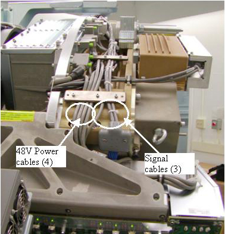

| NOTE: | Make sure all cable slack is pulled toward the 48V power supply and that all harnessing is secured as defined. Failure to properly strap down cabling will result in the cables hitting the stationary frame during high speed rotation. |
Illustration 11: Low channel side cabling
